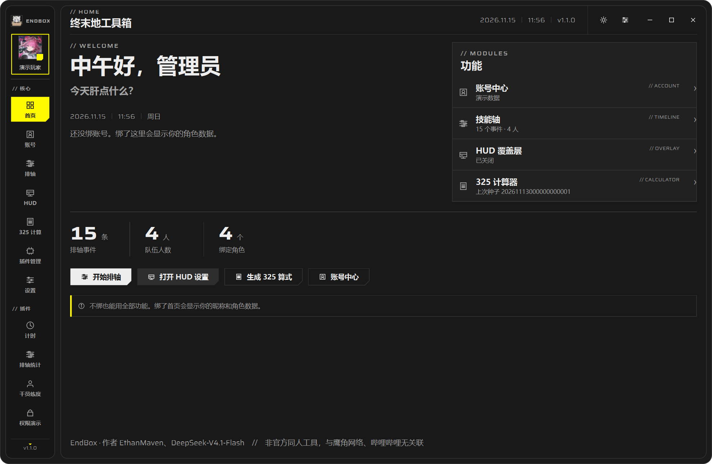
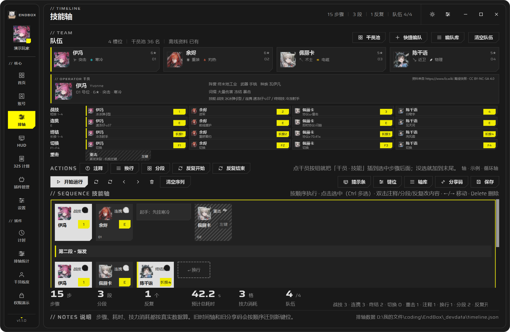
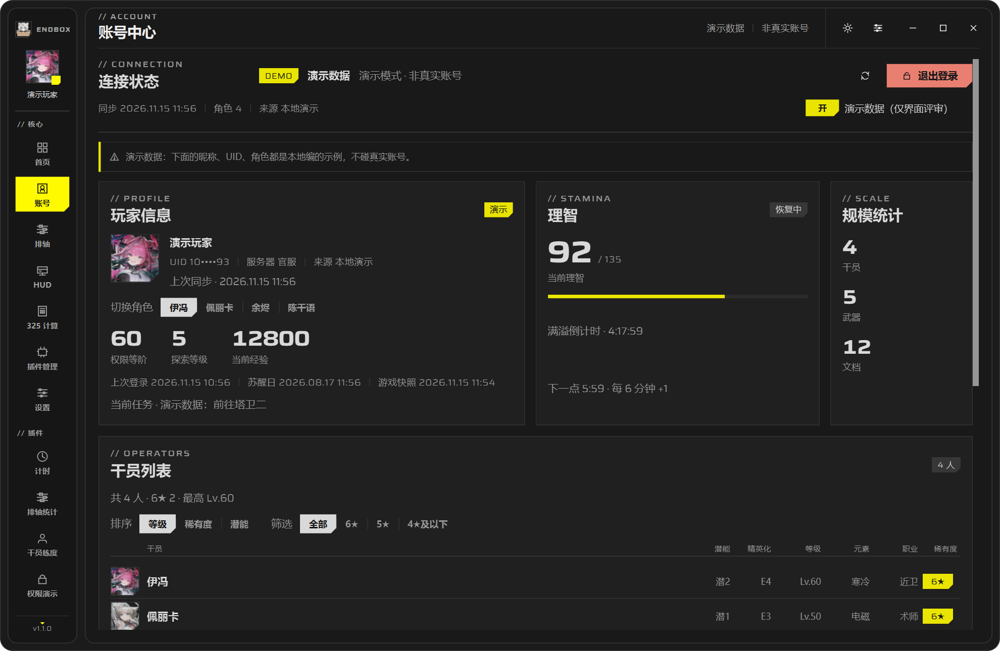
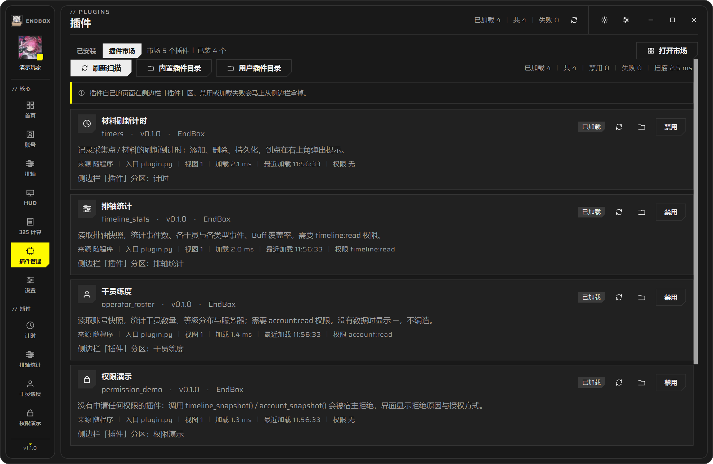
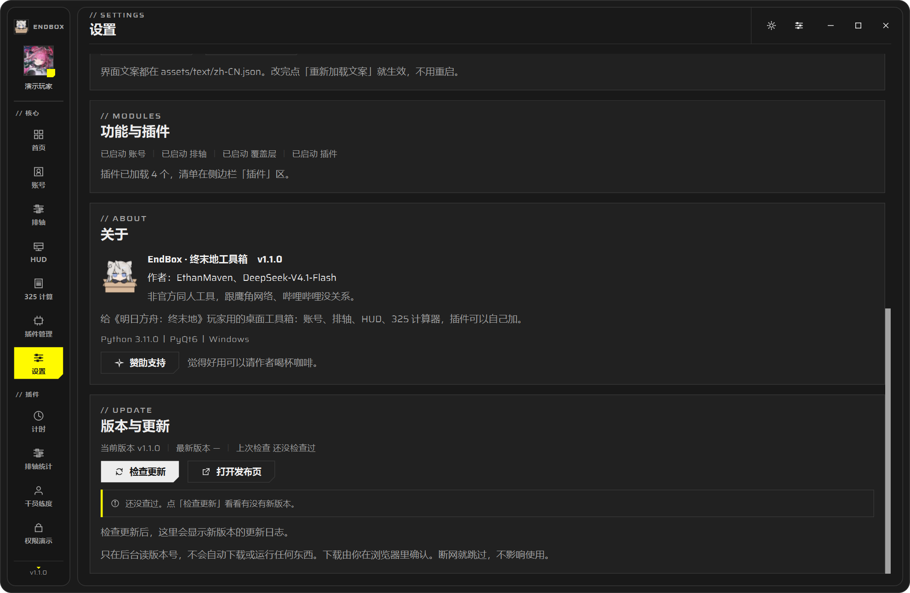

ENDBOX
给《明日方舟：终末地》玩家的桌面工具箱
账号资料、技能轴排轴、独立 HUD、325 计算器、插件市场、版本更新——都放在一个窗口里。 无边框深色界面，跟着系统实时模糊的毛玻璃背景；解压即用，数据都在软件目录，不写注册表。

Modules
主要功能
// 每个模块都能单独使用
账号中心
森空岛 / B 站扫码登录，玩家卡、理智恢复倒计时、地区探索、通行证与每日任务、帝江号基建、每日签到。
// ACCOUNT
技能轴
4 人编队，战技 / 连携 / 终结 / 切换 / 重击 / 注释 / 分段 / 反复排成一条有序的轴；拖拽、撤销重做、轴库、分享码。
// TIMELINE
运行提示条
置顶显示下一步按什么：数字短按战技、长按终结、E 连携、F1–F4 切换。按错自动跳过并标红，整轴默认反复。
// RUN BAR
HUD 覆盖层
跟排轴完全独立：只显示账号、电池、时钟。鼠标穿透、不抢焦点、不进任务栏，Ctrl+Alt+H 开关。
// HUD
325 计算器
苦也，这也言周！？
// CALCULATOR
插件市场
已安装 / 市场分栏，分类、搜索、安装、更新、卸载；官方源随程序分发，也能加第三方源，zip 校验 sha256。
// PLUGINS
版本更新
设置页检查 GitHub Releases 与仓库版本声明，能看更新日志、打开发布页、忽略版本；断网时安静跳过。
// UPDATE
Screens
界面长这样
// 深色主题 · 实际运行截图




Get started
四步开始用
Download
下载 EndBox 1.1.0
// Windows 10 / 11 · 64 位
首次运行 Windows 可能弹「已保护你的电脑」——这是 SmartScreen 对未签名程序的常规提示，不是报毒。点「更多信息 → 仍要运行」，或先运行包里的 1-Start EndBox (first run).bat。
// EndBox-1.1.0-win64.zip
SHA256 D809731250FEE797A25DAD9D6854F06AFFECC70BDBFA82A10857FAB60931D459
用户数据：settings / 登录信息 / 日志 / 轴库 / 历史，都在 userdata/
FAQ
常见问题
需要登录游戏账号吗？
不登录也能用全部功能。官服用森空岛 App 扫码，B 服用哔哩哔哩 App 扫码；登录信息用 Windows DPAPI 加密存在本机，只有当前用户能读。
运行提示条按错会怎样？
按错直接跳过这一步、不给弹窗，被跳过的卡片标红并抖一下；进入下一步时白色圆圈收缩提示，整条轴不会卡住。
游戏要以管理员运行怎么办？
游戏是管理员权限时，EndBox 也用管理员启动才能读到按键（Windows UIPI 限制）。不用按键功能时可以普通启动。
为什么界面有时没有毛玻璃？
毛玻璃是 Windows 系统实时模糊，最大化时会关闭；系统或显卡驱动不支持时回退纯色背景，不影响功能。
数据存在哪里？重装会丢吗？
默认在软件同目录的 userdata/；程序目录写不了时退回 %APPDATA%\EndBox。覆盖安装不会删数据。
项目开源吗？
MIT 许可。界面文案、模块、插件 API 都有文档；游戏数据与素材版权归鹰角网络，只在本机使用、不随程序分发。